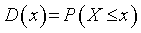
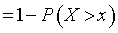
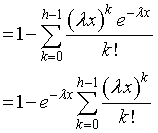

ガンマ関数の導出-1
では，まず，WolframMathWorld，ではどのようにして導出していくかを見ていきましょう．
説明によると，
Consider the distribution function D(x) of waiting times until the hth Poisson event given a Poisson distribution with a rate of change λ,
とあります．ここで， distribution function，とは，
分布関数
と言う意味ですが，累積分布関数，ともいいます．
つまり，-∞（もしくは∞）から，x，までに該当する確率，と考えればいいでしょう．
と言うことで，D(x)，とは，
レート，λ，で起こるランダムなイベントがh回以上起こる確率
と言うことになります，式に表すと，

となります．
と言うことは，h回未満起こる確率を全体から引いたものに等しいので，

と同じことになります．
ここで，h回未満起こる確率，とは，たとえば，
h=3
とすると，
h=0,1,2
回起こる確率を意味します．このイベントはポアソン過程に従うので，

と置き換えることができます．
次に，累積ではなく，ある，x，に対して起こる確率，確率密度関数，を考えていきましょう．